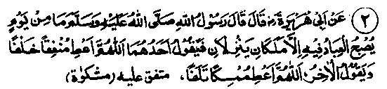
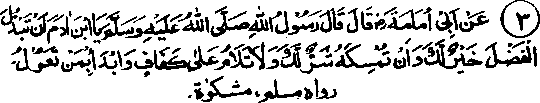
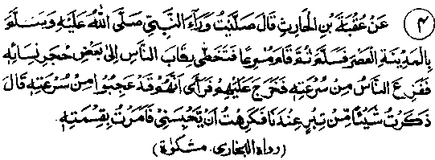

Chapter One · Section (b): Ahadith on the virtues of spending for the cause of Allah
2. One angel invokes: ‘O Allah give him who spends’; the other invokes: ‘ruin the property of one who withholds’

Hadith 2
Rasulullah Sallallaho alaihe wasallam said. Two angels come down (from the heavens) every morning; one prays, ‘O Allah, grant a return to him who spends, while the other prays, ‘O Allah, destroy the wealth of him who withholds it”.
Note: This Hadith is corroborated by the Ayat given at Serial No. 20 above, which says, "And whatever you spend (for good), He replaces it". We have also quoted many more Traditions bearing on this subject, in that context. Abu Darda Radhiallaho anho has quoted Rasulullah Sallallaho alaihe wasallam as saying, "At sunrise, two angels, one on each side of the sun, make a proclamation, which is heard by everybody except Jinns and mankind, calling, ‘O people, turn to your Lord! The little which suffices for you is better than the abundance which may make you neglectful towards Allah!’ Similarly, (the Hadith continues) Au the time of sunset, two angels pray loudly from both sides of the sun, saying, ‘O Allah, grant an early return to him who spends (for a good cause) and ruin the wealth of him who hoards itT. (Ahmad)
A Hadith says, "When the sun rises, two angels, one on each Side of the sun, pray to Allah, calling, ‘O Allah, grant an early return to him who spends; O Allah, ruin the property of him who withholds it"! Another Hadith says that there are two angels in the heavens above, who have no other function but to keep on praying; one says, ‘O Allah, grant a return to him who spends (for a good cause), the other says, ‘O Allah, destroy the property of him who holds it back". (Kanz)
It appears that the mornings and evenings are not the special hours appointed for the angels to make such invocations; they go on making these supplications all the. time. The versions quoted earlier mean that they are particularly engaged in such supplications in the mornings and evenings (though they never cease to do so).
Known examples and experience of life confirm the truth of these Ahadith; very often, those who amass wealth fall a prey to calamities that ruin their property; some get involved in litigation, others enter upon a life of wasteful expenses, still others have the thieves chasing them. Hafiz Ibne Hajar Rahmatullah alaihe says, "When the property is hoarded, it brings ruin in its wake: very often the property is ruined; sometimes the owner himself passes away, leaving behind everything, or he is ruined through leading a vicious life. On the contrary, those who spend (for a good cause) are blessed with increase in their property". According to a Ha "Whoever gives much as Sadaqah, Allah Himself looks after his property after his death". (Ihya). That is to say, the heirs of such persons do not waste away the property they have left behind and do not indulge in useless pursuits; unlike the sons of the rich feudal lords who squander away the wealth inherited from their parents. Imaam Nawavi Rahmatullah alaihe writes: Only that expenditure is commendable which is incurred for good causes, i.e. spending to provide for one’s family, for entertaining one’s guests or for other devotional deeds"
Qurtabi Rahmatullah alaihe says, Devotional deeds include both obligatory (Fardh) and supererogatory (Nafl) devotions. However, he who does not give away (Nafl) Sadaqaat is not affected by the curses of the angels, unless he is overpowered by an innate miserliness which causes him to pay ‘Fardh Sadaqaat’ with a heavy heart".

Hadith 3
Rasulullah Sallallaho alaihe wasallam has said, "O son of Adam, it is better for you to give away what you can spare, and to withhold it is worse for you; but you will not be blamed if you keep back what may barely suffice you, and spend first on those who are dependent on you".
Note: This subject has also been corroborated by the Ayat at No. 4 above, where Haq Ta'ala Shanohu Himself has said, "Whatever is over and above your needs, spend it". That Hadith was also mentioned in that place. Here it is repeated for the sake of emphasis and clarification. The truth is that anything in excess of the proper needs is not to be held back at all. The best use for it is to have it deposited in Allah’s Treasury, which never suffers a loss, nor is subject to any mishap. It will be readily available at the time of extreme adversity and pressing needs, unknown in this life. And there will be no source of income at that time, except the wealth spent as Sadaqah available as deposits in the storehouse of Allah. Another fact mentioned in this Hadith is that there will be no blame for keeping things that are needed urgently. These cover the bare necessities without which life becomes difficult, such as needs of one’s family or some dependent people or even the animals which are owned by 8 person and whose care is his responsibility. Any harm to those due to lack of provisions, will be a sin and a cause of Divine punishment. In the Hadith of Rasulullah Sallallaho alaihe wasallam it is said that it will be enough to get one condemned" if one whose livelihood is one’s responsibility, perishes or dies (Mishkaat).
Abdullah Ibne Saamit Rahmatullah alaihe says that he was with Abu Zarr Radhiallaho anho when he received his share from Baitul-Maal and purchased his requirements from the bazaar, after which he was left with seven Dinaars (gold coins) and he instructed his slavegirl to get them changed into small coins (for distribution). The narrator advised Abu Zarr Radhiallaho anho to keep the gold coins for a future need, such as entertainment of guests, etc.
Abu Zarr Radhiallaho anho said that his friend Sallallaho alaihe wasallam had settled the issue once for all, saying that if gold and silver are hoarded they would become sparks of the Fire for their owner, unless he spends them for the cause of Allah. As a matter of fact, so many are the exhortations given by Rasulullah Sallallaho alaihe wasallam to spend for the cause of Allah whatever exceeds one’s needs that some Sahabah thought that no one had any right to keep with him anything exceeding his rightful needs.
Abu Saeed Khudri Radhiallaho anho narrates that once he was among those who were accompanying Rasulullah Sallallaho alaihe wasallam on a journey. One of the companions kept moving up and down the caravan with his she-camel. At this, Rasulullah Sallallaho alaihe wasallam said that if someone had a spare animal for riding he should give it away to the one who had none, and whoever had extra provision should give these to them who were in need. The Sahabah surmised from this that no one had any right to his provisions beyond his actual needs. (Abu Dawood). As regards the Sahabi with the she-camel, if he was proudly showing off his animal, the injunction of Rasulullah Sallallaho alaihe wasallam was addressed to him and it meant that no one should make a show of his extra provisions; he should rather give them to others. But, if he was moving up and down with the animal to show its miserable condition, it means that he was indirectly asking others to give him a mount In that case, the injunction of Rasulullah Sallallaho alaihe wasallam was addressed to other people, exhorting them to help him.

Hadith 4
Uqbah Radhiallaho anho has narrated that he offered his ‘Asr’ Salaat with Rasulullah Sallallaho alaihe wasallam. At the end of Salaat Rasulullah Sallallaho alaihe wasallam hastily got up and, stepping over the shoulders of the people, went to the houses of one of his wives. People, not knowing what the necessity was, were perplexed over his haste. On his return he perceived the people’s anxiety and explained that he had suddenly remembered leaving behind a piece of gold in the house and he was afraid (lest his death should take place while he owned a piece of gold; which would become objectionable for him on the Day of Reckoning). So, he had hurried home to tell them to distribute it immediately.
Note: The same incident has been narrated in another Hadith which concludes:'1! had left some gold in the house, and did not like to keep it with me during the night. A still more amazing anecdote has been related in another Hadith: Aishah Radhiallaho anha relates that during the illness of Rasulullah Sallallaho alaihe wasallam she had, with her, six or seven Dinaars belonging to him, which he told her to give away immediately. But she was busy attending to him in his illness and could not distribute the money immediately. When he Sallallaho alaihe wasallam asked her whether she had distributed the Dinaars, she replied that she had done nothing about them because she had been busy looking after him in his illness. He called for the Dinaars and, placing them in his hand, said, "How awkward would it be, if Allah’s Rasul were to meet Allah, while having these in his possession!" (i.e. he would feel ashamed to meet his Lord while having Dinaars in his possession. (Mishkaat)
In another Hadith she has been reported as saying, "Some gold coins were given to him by someone at night; as a result he could not sleep Until she was able to spend them late in the night" (Ihya). Sahal Radhiallaho anho says that once Rasulullah Sallallaho alaihe wasallam had seven gold coins, which he had kept with Aishah Radhiallaho anha. He told her to send them to Ali Radhiallaho anho but he soon fainted, as a result of which Aishah Radhiallaho anha remained occupied. A little later, when he recovered from the swoon, he asked the same question and again fainted. This happened several times. Ultimately the coins were sent by Aishah Radhiallaho anha to Ali Radhiallaho anho which he distributed. This incident happened during the day. The following night, preceding Monday, was the last night of the life of Rasulullah Sallallaho alaihe wasallam and that night Aishah Radhiallaho anha had no oil in her lamp. She sent the lamp to woman in the neighbourhood for filling it with some oil, requesting that it was needed for Rasulullah Sallallaho alaihe wasallam who was seriously ill and was about to depart from the world to meet Allah Ta'ala. (Targheeb)
Umme Salmah Radhiallaho anha has also narrated a similar incident. She says that once Rasulullah Sallallaho alaihe wasallam came home looking upset; she thought he was not well and enquired as to what had happened. The reply was that seven Dinaars had been received the previous night and that they were still lying unspent in the corner of his bed (Ihya). Rasulullah Sallallaho alaihe wasallam used to receive presents continuously but he spent them immediately, whether it was day or night and whether he was well or unwell. He did not rest content till everything had been spent So much so that, in the state of serious illness when there was no oil in the lamp and seven gold coins were lying in the house, neither Rasulullah Sallallaho alaihe wasallam nor Aishah Radhiallaho anha thought of buying some oil with that money!
Here the author (Muhammad Zakariyya Rahmatullah alaihe) mentions the case of his own father Rahmatullah alaihe who, he says, never liked to keep any money in his possession at night. He was always in debt and owed seven or eight thousand rupees at the time of his death. So, if he had money at night, he would send it to his creditors and the small change was given to the children, and he would say that he never liked this filth to be with him at night, as death could come unexpectedly. Even more remarkable, I have heard about Shah Abdur Rahim Raipuri Rahmatullah alaihe that he used to receive many gifts and these, when accumulated, were suitably distributed. If after that, more things were received, he felt unhappy and would say, "Oh! more have come!" Finally he distributed even his clothes and told his close associate Maulana Abdul Qadir Rahmatullah alaihe to lend him clothes to wear. The Auliya of Allah (the saints) behave amazingly: They have a strong desire to depart from this world empty-handed, just as they were born, and not leave behind any worldly collection as their property.